×
滾輪縮放 · 拖曳平移 · ESC 關閉
SD外牆帷幕板排列 / DD排煙窗檢討
黃任遠 Alex Huang | 2026-03-28
跟業主討論外牆面板排列方案，每種方案都要一片片手動改 Revit
每個房間都要對照法規算一遍，還要再手動整理成 Excel 給技師看
| 工作項目 | 傳統做法 | 耗時估算 |
|---|---|---|
| 帷幕牆面板方案 | 手繪/AI Studio 小工具+ Revit 手動逐格改 | 每個方案 0.5-1 小時 |
| 排煙窗法規檢討 | 對照法規逐間計算 + 手動整理 Excel | 一棟建築 半天起 |
1. 提供 AI 我已知的工作流程
2. 持續和AI討論規格，讓AI 補充細節、闕漏、矛盾點，或上網搜尋最佳實踐，並協助建立流程圖
3. 最後請AI依規格開發出MCP工具
1. Skill (技能)：解決問題的「大類別」（例如：【法規自動化檢討】）
2. Domains (領域)：解決特定法規或特定工作流的「邏輯組合」（例如：排煙窗檢討、居室採光檢討）
3. Tools (工具)：執行任務的「最小單元」，具備高度共用性（例如：get_room_info、create_dimension）
+ 【排煙窗檢討 Domain】 需要：tool"取得房間面積" (取 2%) + tool"取得窗戶面積" (取折減係數)。
+ 【採光檢討 Domain】 需要：tool"取得房間面積" (取 1/8) + tool"取得窗戶面積" (取台度 75cm 以上)。
+ 技術共享：雖然法規檢討流程中，有效面積計算不同，但「取得房間面積、取得窗戶面積」的動作是重疊的。
+ 在 【排煙檢討】 中：用來標註窗戶在「天花板下 80cm 有效帶」內的實際開啟高度。
+ 在 【走廊分析】 中：用來標註走廊的淨寬度。
+ 在 【自動標註】 中：用來標註房間與四周牆體的距離（如：check_exterior_wall_openings）。
+ 結論： 只需要開發一次 create_dimension 的 C# 命令，就能支援多個不同 Domains 的視覺化回饋。
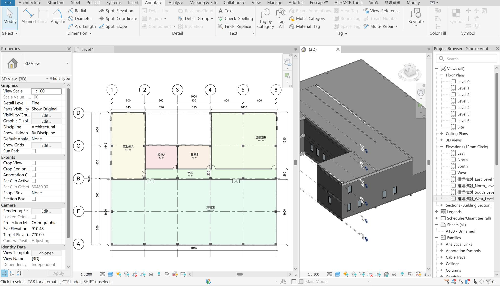
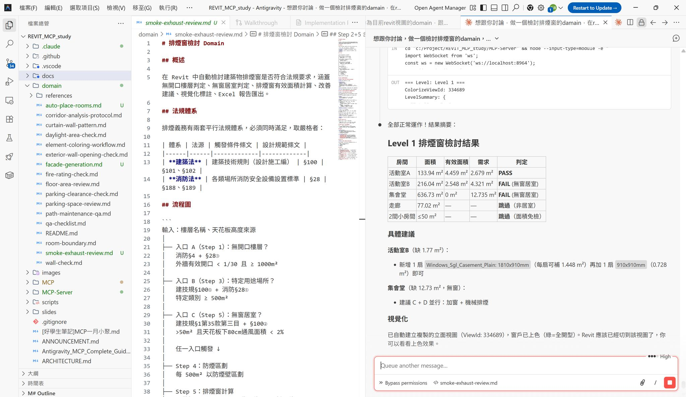
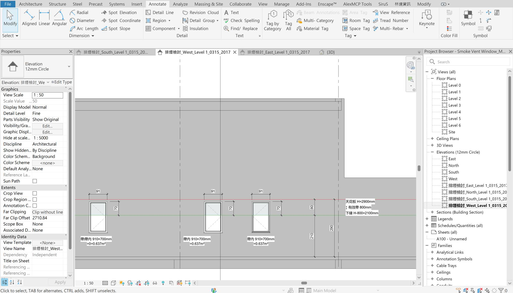
+ 前言：上次聽 David 聽分享居室採光法規檢討，想到自己之前算很久的排煙窗也可以檢討
+ 我的目標：盡量透過窗戶排煙，而不要設置排煙設備。
但同時盡量不新增窗型，維持立面設計與窗型規格數。
1. 所有樓層需設置排煙設備：
當層樓地板面積≥ 1000m² 且 當層有效開口面積 > 當層樓地板面積1/30
2. 單一居室需設置排煙設備：
居室面積> 50m²且 天花板下80cm有效通風面積 < 該居室面積2%
1. 更上層的事情：特定用途場所，該用途 總樓地板面積≥ 500m² 就需要設置排煙設備
2. 若空間更大：防煙區劃（每 500 m² 一個區），依區劃檢討
3. 窗戶開啟方式的折減（固定窗 = 0；開啟角度<45度需要折減）
1. 溝通用圖說：標出天花下 80cm 的範圍線，並標註出有效範圍內的開口長寬
2. Excel 列出各房間與窗的對應明細
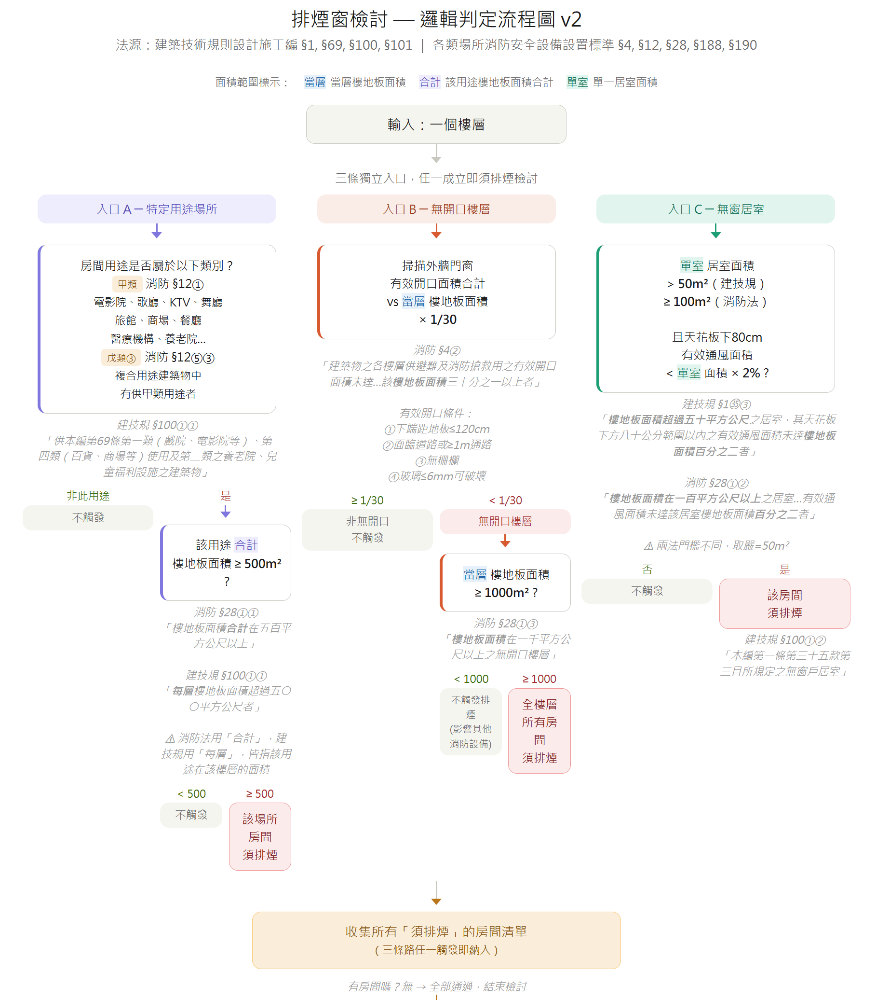
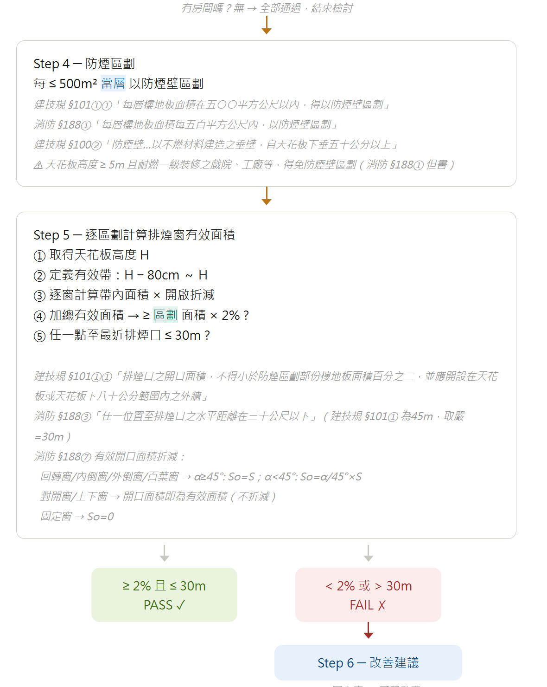
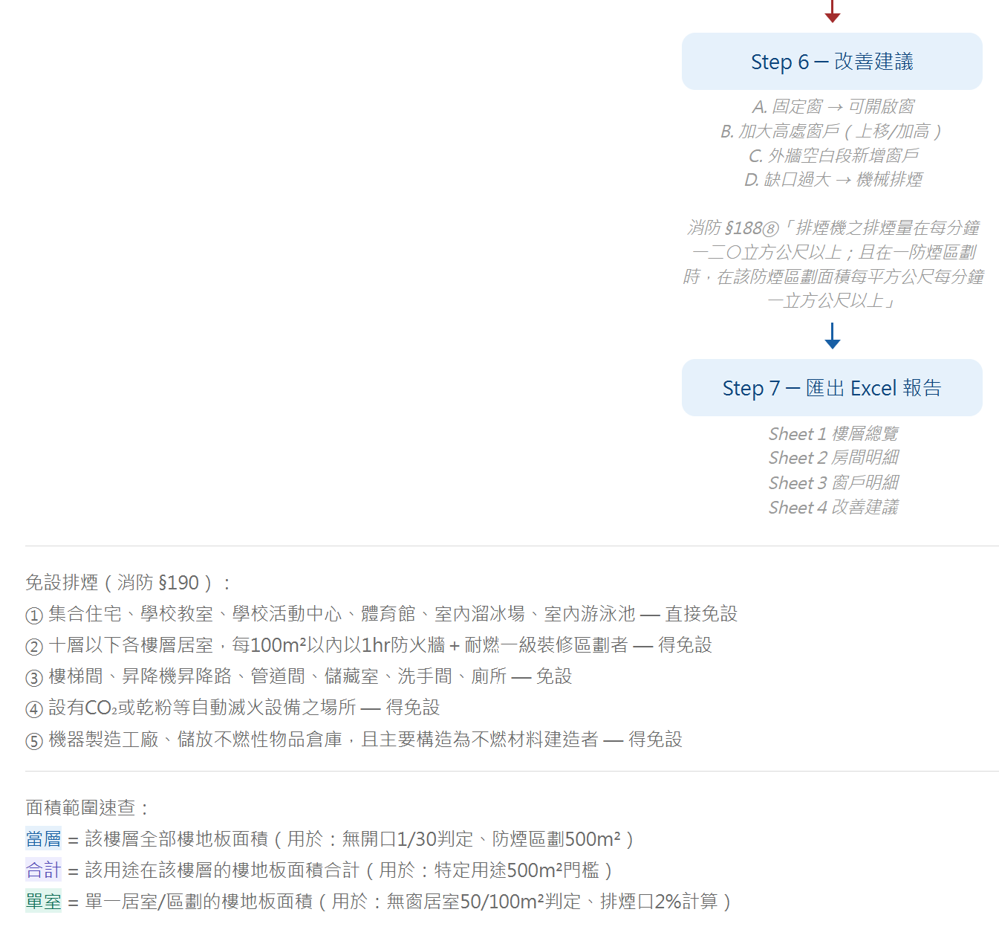
可重複利用的 tools
| 工具名稱 | 功能說明 | 相關 Domain |
|---|---|---|
| create_detail_lines | 在視圖中繪製詳圖線（如天花線、有效帶界線） | 是 (共用於 stair-hidden-line-workflow.md) |
| create_dimension | 建立尺寸標註（標註窗寬、窗高、有效高度） | 是 (廣泛共用於 corridor-analysis-protocol.md, auto-dimension-workflow.md 等) |
+ 這次要新開發出來的 tools
| 工具名稱 | 功能說明 | 相關 Domain |
|---|---|---|
| check_smoke_exhaust_windows | 排煙窗有效面積檢核與無窗居室判定 | - |
| check_floor_effective_openings | 依消防法規判定是否為無開口樓層 | - |
| export_smoke_review_excel | 匯出排煙檢討專用的 Excel 報告 | - |
+ 這次要新開發出來的 tools（續）
| 工具名稱 | 功能說明 | 相關 Domain |
|---|---|---|
| create_section_view | 建立面向外牆的剖面視圖以供檢討 | - |
| create_filled_region | 建立填充區域（用於視覺化有效排煙範圍） | - |
| create_text_note | 建立文字標註（用於統計摘要顯示） | - |
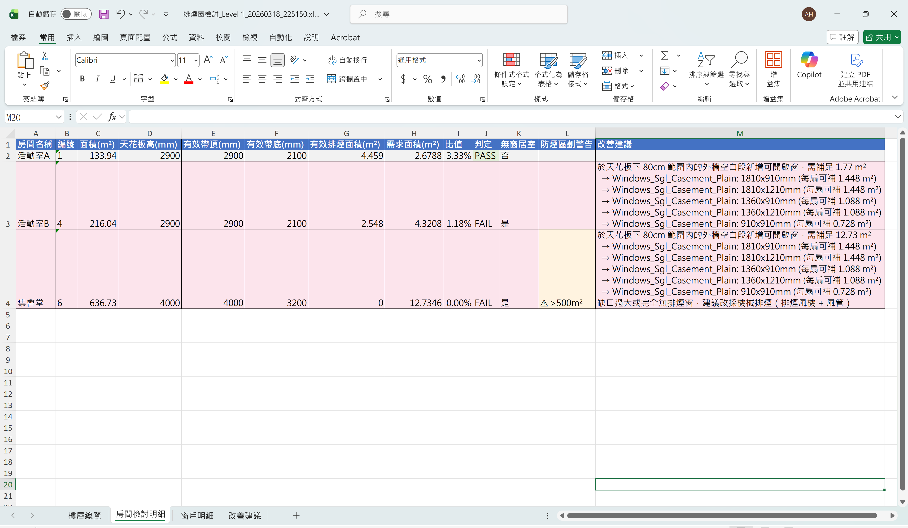
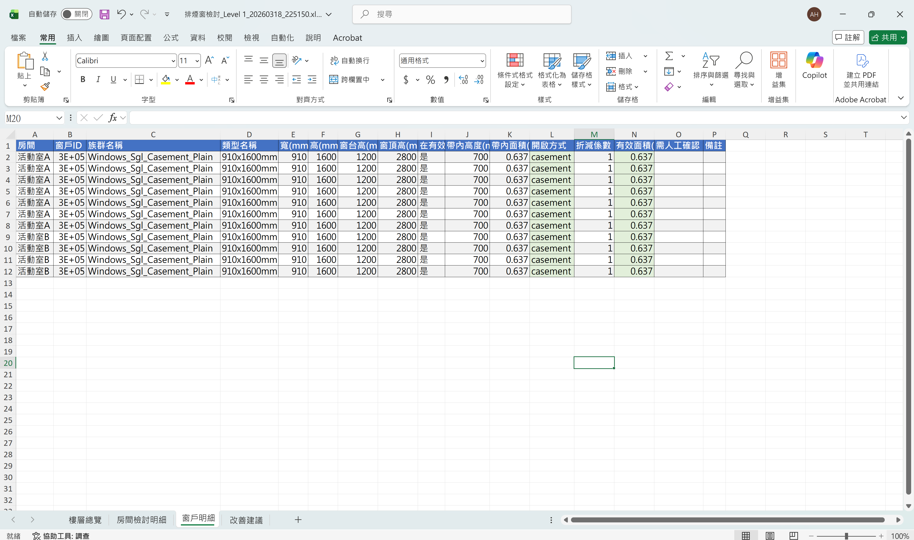
+ 立面圖天花標示尚不穩定，需繼續調整
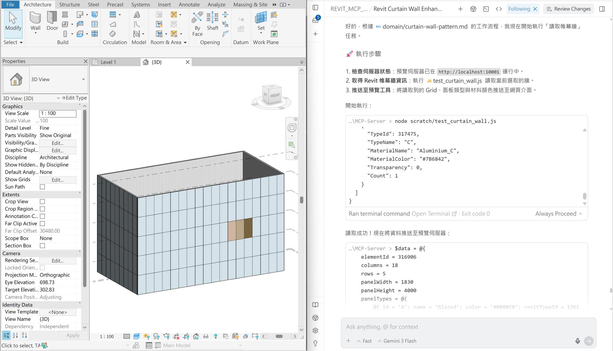
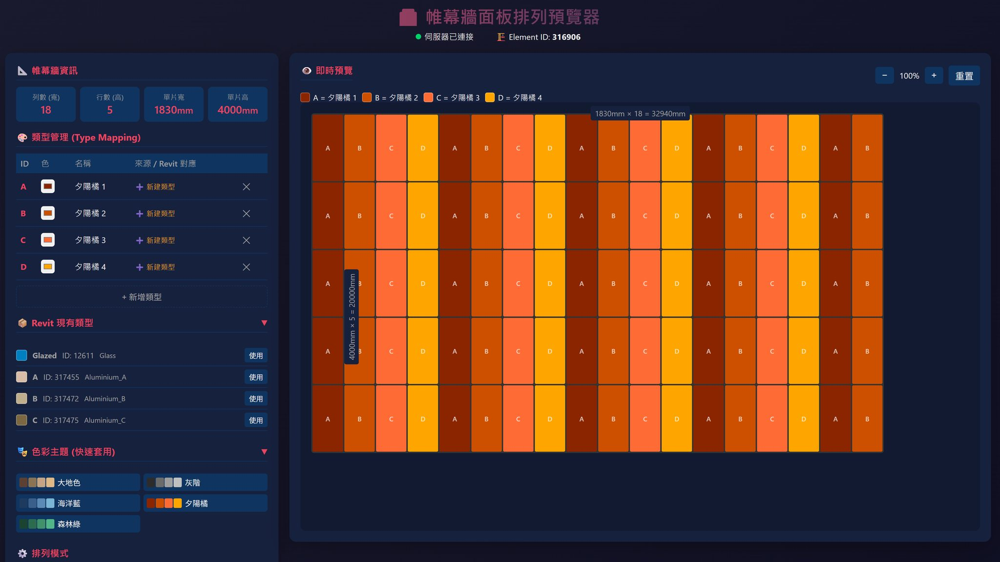
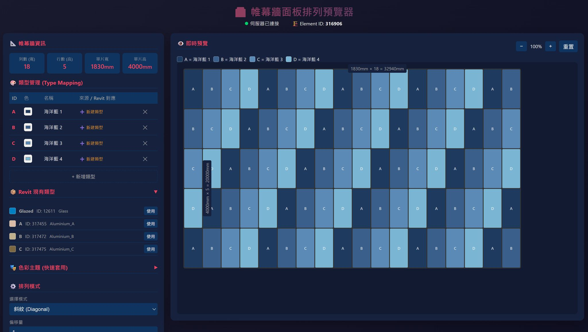
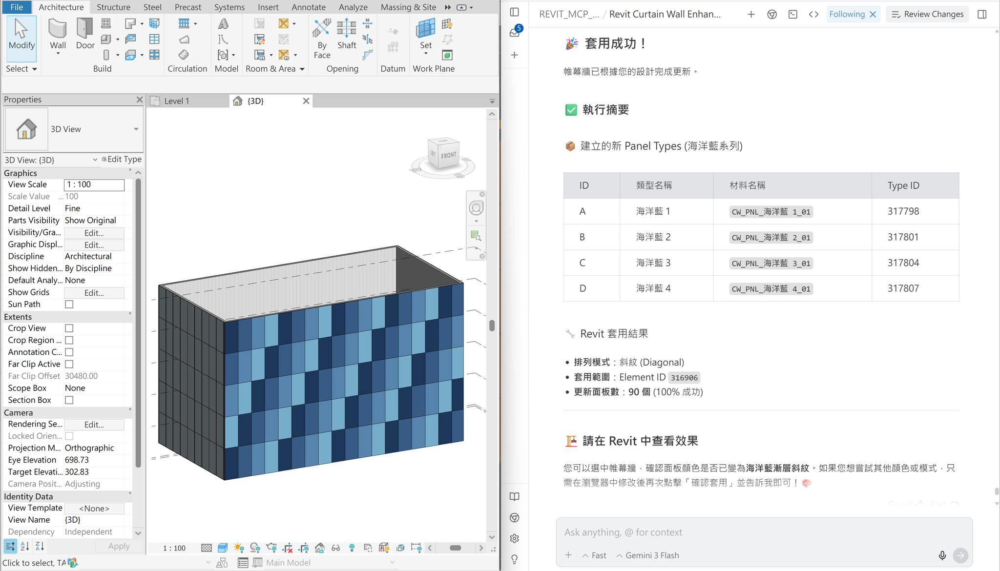
Gemini Canvas 做的工具
- 建築立面設計
https://gemini.google.com/share/993314c3bdb4
- 對縫鋪面產生器
https://gemini.google.com/share/a7f8fb9dbb09
Google AI Studio 做的工具
- 建築平面案例分析工具
https://aistudio.google.com/apps/drive/1xl7FRgUViwfUmtku_yTlBoonVJrq8Zkn?fullscreenApplet=true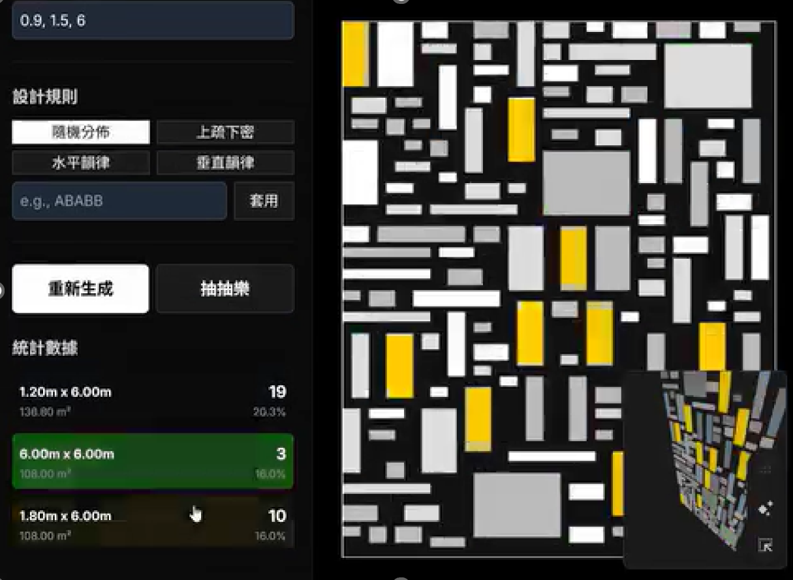
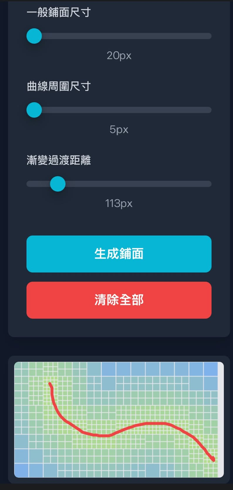
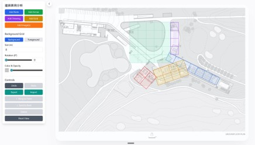
選取 Revit 帷幕牆
↓
自動讀取帷幕網格（幾行幾列、已有的類型）
↓
在瀏覽器中視覺化設計
（現有或新類型 / 色彩主題 / 排列模式...）
↓
確認套用
↓
Revit 模型自動更新| 工作環節 | 以前 | 現在 |
|---|---|---|
| 帷幕牆方案討論 | 手動改 Revit × 方案數 | 網頁預覽確認 → 一鍵套用 |
| 排煙法規核對 | 對著條文逐間計算 | 自動計算 + 視覺化標示 |
| 交給技師的資料 | 手動整理 Excel | 自動匯出，含判定色碼 |
| 不足的窗戶 | 自己推算 | AI 告訴你差幾個，你決定怎麼補 |
| 設計決策 | 重複勞動後，很累的人 | 看著AI依SOP做出的成果，有足夠時間、精神做判斷的人 |
快照會複製到 snapshots/ 資料夾，不影響工作版本。